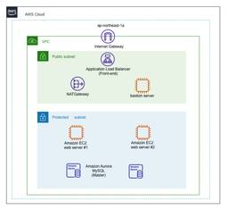
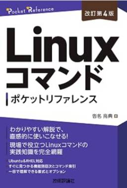
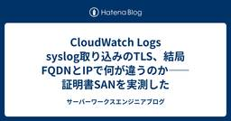
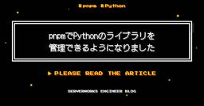
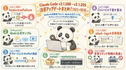

サーバーワークスエンジニアブログ
https://blog.serverworks.co.jp/
AWSトップエンジニア数「AI」「セキュリティ」部門で国内No.1のサーバーワークスのエンジニアが、AWSに関する技術情報をお届けします。
フィード

AIにfeatureブランチを切ってもらったのに不意にmainにpushされてしまう問題
サーバーワークスエンジニアブログ
こんにちは。 アプリケーションサービス本部、DevOps担当の兼安です。 今回は、AIとGitのお話をします。 はじめに 発生する現象の内容 現象が発生する技術的な原因 push 時のグローバル設定で被害を軽減する 最終的にはブランチ保護ルールを設定する はじめに 以前から、AIが不意にmainにpushしてしまう現象はありますが、 最近、feature ブランチを切ったつもりが、git push がなぜか保護ブランチ（main）にpushしてしまう現象に連続して遭遇しました。 なので、その現象と原因についてまとめておこうと思います。 なお、遭遇はしましたが個人の検証環境における話なのでご安心…
5時間前

Amazon S3 Tables のテーブルを削除してみた。レプリカからの復帰と、同名で作り直したときのレプリケーション失敗
サーバーワークスエンジニアブログ
1本目の記事「Amazon S3 Tables のリカバリ手法を検証してみた（スナップショット巻き戻し・Parquet退避）」では、データを書き間違えた場合の戻し方を確認しました。 blog.serverworks.co.jp この記事では、テーブル自体を誤って削除した場合を確認します。 テーブルを削除すると、スナップショットも一緒に失われるため、スナップショットでは戻せません。 前提は、1本目の記事と同じ構成です。 テーブルバケットは、同じリージョンのレプリカ用テーブルバケットに、バケット単位でレプリケーションしています。 この記事の結論 元のテーブルを削除しても、レプリカのテーブルとデータ…
1日前
Amazon S3 Tables のリカバリ手法を検証してみた（スナップショット巻き戻し・Parquet退避）
サーバーワークスエンジニアブログ
Amazon S3 Tables のデータを書き間違えたとき、どうやって元に戻すのか。 この記事では、次の3つの方法を実際に試し、できたことと限界を整理します。 レプリケーション: テーブルをもう1つのテーブルバケットに複製しておく。 スナップショットの巻き戻し: Iceberg のスナップショットを使って、テーブルを過去の状態に戻す。 Parquet 退避: 日ごとのデータを S3 に Parquet で書き出しておき、そこから復元する。 テーブル自体を誤って削除した場合は、別の記事で扱います。 この記事の結論 起きたこと 使う方法 戻せる範囲 データを書き間違えた スナップショットの巻き戻…
1日前
シノニムを増やしても精度が上がらない原因は何？ Amazon Lex V2カスタム語彙を検証してみた
サーバーワークスエンジニアブログ
はじめに こんにちは、サーバーワークス橋本です。ようやく寒くなってきて猫が布団に潜り込んでくる季節になりました。 しかし、私は寝返りが激しいので中に入ってこないことでキャットタワーの上から監視されながら寝るという感じになります。 さて、今回はAmazon ConnectとAmazon Lexの組み合わせで以下の点でハマってしまったので検証したことをブログで展開したいと思います。 「数字や型番を含む固有名詞の音声認識が、何度シノニムを追加しても改善しない」 一見するとLexのスロットタイプに登録するシノニム（同義語）を増やせば解決しそうに思えますが、実はレイヤーの異なる問題を混同している可能性が…
2日前
組織導入でClaudeとKiroをどう選ぶか考えてみた
サーバーワークスエンジニアブログ
はじめに 前提: AWSでClaudeを使うなら、Bedrock経由で意外と揃う AIエージェントの違いは正直あまり感じない コストと統制は、Claude側も追いついている コストの上限 可視化と統制 残る明確な違い: 複数ベンダーのモデルを使い分けられる 誰にとってKiroが候補になるか 所感 まとめ はじめに こんにちは、アプリケーションサービス本部ディベロップメントサービス3課の北出です。 前回の記事では、Kiroを組織に導入する際のガバナンス設定（IAM Identity Centerやアカウント設計、統制）を整理しました。今回はその手前にある「そもそも組織としてClaudeやKiro…
2日前

インターネットゲートウェイって、構成図のどこに置けばいいの？本気出して考えてみた
サーバーワークスエンジニアブログ
インターネットゲートウェイって、構成図のどこに置けばいいの問題 AWS の構成図を描いていると、わりとどうでもいいところで手が止まることがあります。 今回は、その代表格「インターネットゲートウェイ（IGW）を構成図のどこに、どう描くか」というしょーもない、でも地味に気になる話です。 構成図レビューをしていて「IGW が VPC の枠線に重なってるのがモヤモヤする」という話になり、せっかくなので整理しておこうと思った次第です。 そもそもインターネットゲートウェイって何 ざっくり言うと、VPC とインターネットをつなぐための出入り口です。 もう少しちゃんと言うと、インターネットゲートウェイには主に…
2日前
AWS BuilderCards の日本語版が発売！英語版と見比べてみた！
サーバーワークスエンジニアブログ
こんにちは！エデュケーショナルサービス課、濱岡です！ ついに、AWS BuilderCards の日本語版が発売されました！！！！ 以下のページで販売されています。 www.amazon.co.jp 今回は日本語版（第2版）が発売されたので、英語版（第2版）と比較をしてみます！！！！ 第1版と第2版の違いは以下で紹介しています。 blog.serverworks.co.jp 2026年10月14日時点では1~2ヶ月で発送となっており届くまで時間がかかりそうではありますが、興味のある方は買ってみてくださいね。 また、弊社宮澤が日本語版の開封動画もあるのでよかったら見てください。 www.yout…
3日前

今から覚えるSELinux再入門 1
1
サーバーワークスエンジニアブログ
概要 Amazon Linux 2027でEnforcing採用されるSELinuxを、最小の項目を覚えて使いこなせるようにします。 はじめに Amazon Linux 2027のプレビュー版が2026年9月にリリースされています。 aws.amazon.com Amazon Linux 2027について、Webで検索してみるとAL2027のブログ記事がいくつか見られます。 そのほとんどでホットトピックとして扱っている話題、それは「SELinux Enforcing」です。 Amazon LinuxのSELinuxは、Amazon Linux 2022のプレビュー版で Enforcing 採用…
3日前
AWS Security Hub の検出結果を S3 に CSV/JSON エクスポートしてみた
サーバーワークスエンジニアブログ
今日誕生日の人、おめでとうございます🎉 エデュケーショナルサービス課の森純子です。 Security Hub の検出結果（findings）は、コンソールで確認するだけでなく、コンプライアンス報告書や監査証跡として社内共有したい場面も多いはずです。これまでは自前でデータ抽出パイプラインを構築・維持してましたが、2026年10月9日のアップデートで、Security Hub のコンソールからワンクリックで S3 に CSV または JSON（OCSF 形式）としてエクスポートできるようになりました🎉 AWS Security Hub now exports findings to S3 in C…
3日前

CloudWatch Logs syslog取り込みのTLS、結局FQDNとIPで何が違うのか——証明書SANを実測した
サーバーワークスエンジニアブログ
概要 クラウドリライアビリティ2課 シノハラです。 Amazon CloudWatch Logs のマネージドsyslog取り込みを設計していると、「syslog機器の送信先はVPCエンドポイントのIPアドレスを直接書くのか、DNS名（FQDN）を書くのか」「TLSはどうやって有効になるのか」で手が止まります。公式ドキュメントは「6514番でTLSになる」「クライアントは特別な設定なしに証明書を信頼する」とは書いていますが、その証明書に何が入っているのか、IP直指定にすると具体的に何が起きるのかまでは書いていません。 この記事は、その一歩先を実測で埋めます。6514番ポートに実際に接続し、提示…
4日前

pnpmでPythonのライブラリを管理できるようになりました
サーバーワークスエンジニアブログ
サムネイル こんにちは。アプリケーションサービス本部、DevOps担当の兼安です。 先日、pnpmでPythonのライブラリを管理できるようになりました。 私はAWS上でシステム開発をする時に、TypeScriptとPythonを併用することが多いので大変興味深いアップデートです。 というわけで今回は、この機能をAWSと絡めたシステム開発のパッケージ管理に当てはめて考えてみます。 pnpm.io なお、今回紹介する機能はExperimentalで、pnpm v12.4.0以降（pnpm v12）でないと利用できないのでご注意ください。 本記事のターゲット AWS上でシステム開発をする時に、Ty…
4日前

Kiro Crewを使い始めたときに注意したい2つのポイント
サーバーワークスエンジニアブログ
こんにちは。 アプリケーションサービス本部、DevOps担当の兼安です。 Kiro Crewは、複数のAIエージェントやスキルを使い分けられる便利なツールです。 私も使い始めたところ、2点（＋おまけ）ほど「あれっ？」と思ったことがあったので紹介します。 kiro.dev 本記事の検証環境 スキルはリポジトリをまたいでインポートされる Kiro CLIとKiro CrewのDeny設定は別物 [おまけ]アカウントを切り替えたい場合は、CLIからサインアウトするのが確実 本記事の検証環境 本記事執筆時点（2026年10月）の情報です。 ツール バージョン Kiro Crew 0.8.0 Kiro …
4日前

AWS Continuum の AI ペネトレーションテストを実行して分かった準備と注意点
サーバーワークスエンジニアブログ
AWS Continuum の AI ペネトレーションテストを実行して分かった準備と注意点 こんにちは。サーバーワークスで生成 AI 活用を推進している針生です。 最近、個人情報の流出を伝えるニュースが続いていますね。「うちのアプリは大丈夫だろうか」と気になっている方も多いのではないでしょうか。 流出の原因はさまざまですが、Web アプリの脆弱性を突かれるケースもその一つです。そして自社の Web アプリなら、自分たちの手で点検できます。攻撃者の目線で一度確かめておく価値は十分あると思います。 その手段の一つが、AWS Continuum for penetration testing です。…
5日前

Claude Code更新 hooks失敗時ブロック・Mods試用【10/2〜8】
サーバーワークスエンジニアブログ
はじめに サーバーワークスの池田です。 今週（10/2〜10/8）のClaude Codeは、v2.1.288からv2.1.295まで8バージョンが公開されました（欠番はありません）。日付と版は公式CHANGELOGの表記に合わせています。v2.1.295は、日本時間では10月9日の早朝（午前3〜5時ごろ）に公開されました。 今週の中心は、hooksが失敗したときの扱いです。新しい設定が加わり、失敗したフックを素通りさせずに止められるようになりました。公式ドキュメントには、CHANGELOGに出てこない変更もあります。Modsの公式サンプルと、サンドボックスの確認手順です。 紹介済みの機能は、…
7日前

Claude Haiku 5.5 リリース！Sonnet 5との性能差と速度を検証
サーバーワークスエンジニアブログ
はじめに サーバーワークスの池田です。 2026年10月7日、Anthropicが Claude Haiku 5.5 をリリースしました。Opus 5.5、Sonnet 5.5に続く、Claude 5.5ファミリーの3つ目のモデルです。 公式発表は、これまでで最も安く、最も速く、最も高性能な小型モデルと紹介しています。速さは標準速度での比較で、Haiku 4.5と比べた平均コストは約75%低いとのことです。気になるのは、どのSonnetに近い性能なのか、本当に最速なのか、という2点ではないでしょうか。 そこで、公式のベンチマークをSonnet 5・Sonnet 5.5と同じ指標で並べ、手元のC…
8日前
Amazon Connect Talent とは？実際にインスタンスを立ち上げて分かった自動生成リソースとクリーンアップの注意点
サーバーワークスエンジニアブログ
はじめに こんにちは、サーバーワークス橋本です。 最近食欲の秋なのか猫がご飯をモリモリ食べます。食べ過ぎて横に大きくなることで体積が増えることによって私は幸せになります。 しかし、太りすぎには注意していこうと思います。 さて、Amazon Connect に新たな AI 機能「Amazon Connect Talent」が一般提供されました。 Amazon Connect Talent は、AIが候補者に対して音声・テキストでプロアクティブなスクリーニング（AI面接）を行う機能です。 今回は、この Amazon Connect Talent が一体どのようなサービスなのか、実際のコンソール操作…
9日前
Kiroの組織導入のはじめ方とガバナンス設定
サーバーワークスエンジニアブログ
はじめに Kiroとは Kiroのユースケースとメリット 料金体系 ガバナンス設定 全体構成（アカウント設計） IAM Identity Centerのセットアップ手順 利用リージョンと請求に関する注意点 ユーザーの利用開始（ログイン手順） 管理者側のKiroの統制設定 データ保護・共有設定 MCP・モデルの統制 利用状況ダッシュボード 超過（Overage）設定 その他の設定とセッション管理 導入ロードマップとまとめ はじめに こんにちは。アプリケーションサービス本部ディベロップメントサービス3課の北出です。 Kiroを利用する際、多くの場合でIAM Identity Center認証が前提…
11日前
IAM Identity Center の Identity Store がネットワークアクセス制御に対応したので CLI で試してみた
サーバーワークスエンジニアブログ
今月誕生日の人、おめでとうございます🎉 エデュケーショナルサービス課の森純子です。 IAM Identity Center の Identity Store API や SCIM API は、これまで送信元のネットワークを問わず、認証されたリクエストであればどこからでもアクセスできる状態でした。ユーザー・グループ情報を扱う重要な API だけに、特定の VPC や IP アドレスからのアクセスに絞りたい、という要望は少なくなかったはずです。 2026年10月5日のアップデートで、IAM Identity Center の Identity Store API と SCIM API に、送信元ネ…
11日前
AWS Events API を MCP 経由で試してみた
サーバーワークスエンジニアブログ
はじめに この記事で学べること 前提知識・条件 AWS Events API とは？ REST API の操作一覧 MCP サーバーのツール一覧 Kiro に MCP サーバーを設定する やってみた ListEvents 終了済みイベントの取得 GetEvent ListSessions GetSession ReserveSessions AssociateFavorites CreatePersonalTime GetSchedule ログアウトして再認証する まとめ はじめに こんにちは。アプリケーションサービス本部ディベロップメントサービス1課の森山です。 2026 年 9 月 21 …
12日前
コンテナの脆弱性対応で腰が重くならないためのルール作り
サーバーワークスエンジニアブログ
こんにちは。 アプリケーションサービス本部、DevOps担当の兼安です。 今回は、ついつい後回しにしがちなコンテナの脆弱性対応について書いてみます。 本記事における脆弱性対応は、コンテナで使用しているOSやパッケージに脆弱性があった場合に、それらのパッチを適用する作業だと捉えてください。 はじめに AWS におけるコンテナのセキュリティ運用 整備すべきルール① 脆弱性対応後の動作確認手順 整備すべきルール② 脆弱性対応手順の方針 ベースイメージの更新を基本にする コンテナのベースイメージのバージョンはハッシュで指定する パッケージ単位のパッチ適用では、必ずバージョンを指定する 整備すべきルール…
12日前
Claude Code更新 Ultracode独立切替【9/25〜10/1】
サーバーワークスエンジニアブログ
はじめに サーバーワークスの池田です。 今週（9/25〜10/1）のClaude Codeは、v2.1.283からv2.1.287まで5バージョンが公開されました（欠番はありません）。日付と版は公式CHANGELOGの表記に合わせています。 新機能が並んだ週ではなく、以前に紹介した機能の仕様が変わった週です。Ultracodeは、推論の強さ（effort）と別々にオン・オフできるようになりました。/doctorには古い指示を点検するprompt-auditが加わり、Modsには公式のドキュメントとブログが出ています。 紹介済みの機能は、今週変わった部分だけを扱います。以前の記事の説明が今週の変…
14日前
GitHubのimmutable subject claimsにより、GitHubとAWS間のOIDC認証がちょっと変わったのに気づきました
サーバーワークスエンジニアブログ
こんにちは、アプリケーションサービス本部、DevOps担当の兼安です。 今回は、GitHubとAWSの間のOIDC認証で、immutable subject claimsが原因でつまずきました。 これを機に、この機能の解説と、それに伴う注意点を共有します。 簡単に結論を述べると、GitHubの仕様が変わりGitHubとAWSの間のOIDC認証にIAMロールの信頼ポリシーの書き方が変わったので要注意ということです。 本記事はこのことを説明するものです。 GitHubとAWSの間を繋ぐOIDC認証 GitHub Actionsのimmutable subject claimsとは immutabl…
15日前
AWS Certified AI Business Strategist (AIB-C01) Beta Exam ― Key Points and My Exam Experience
サーバーワークスエンジニアブログ
Introduction Key Points in Three Lines What Is AIB? Exam Overview Exam Scope and Trends Domains Topics That Felt Heavily Weighted in My Exam Characteristics of the Questions My Exam Experience Why I Took It How I Studied: Almost No Prep (1–2 Hours) Exam Day Result Tips for Passing Takeaways: The Val…
16日前
Amazon Bedrock API キーの作成と利用を禁止する SCP を考える
サーバーワークスエンジニアブログ
セキュリティサービス部 佐竹です。本ブログでは、Amazon Bedrock における API キーの悪用を防止するため AWS Organizations の SCP (サービスコントロールポリシー) を考えて、実際の JSON を紹介しています。「キーを作らせない」だけでなく「キーを使わせない」までを組織のガードレールとして用意しておくことが、LLMjacking のような新しい攻撃トレンドに対する現実的な備えになるでしょう。
17日前
AWS Certified AI Business Strategist（AIB-C01）― 受験前に知っておきたい要点と受験談
サーバーワークスエンジニアブログ
はじめに 3行でわかる要点 AIB とはどんな資格か 試験概要 出題範囲と傾向 ドメイン構成 私の回で厚めに感じたテーマ 問題文の特徴 受験談 受験の動機 学習方法：ほぼノー勉（1〜2時間） 受験当日 結果 合格のコツ 考察：この資格の価値 まとめ おわりに 参考リンク はじめに こんにちは、愛猫リンゴちゃん大好きのローです。 2026年9月29日にベータ受験が始まった新資格「AWS Certified AI Business Strategist（AIB-C01、以下 AIB）」を初日に受験し、合格しました。 本記事は、これから AIB を受験したい方・どんな資格か知りたい方に向けて、試験の…
17日前
AWS Certificate ManagerがACMEプロトコルに対応、EC2上のNginxでパブリック証明書を発行してみた
サーバーワークスエンジニアブログ
ACMがACMEプロトコルに対応し、CertbotやKubernetesのcert-managerからAWSのパブリック証明書の取得が可能に。この記事ではその仕組みと設定方法を紹介します。
17日前
Amazon InspectorとAWS Security Agent（AWS Continuum）、何が違うのか整理してみました
サーバーワークスエンジニアブログ
ブログサムネイル こんにちは。CC2課の古屋です。 私はこれまで Amazon Inspector（以下、Inspectorという） について「なんとなく脆弱性を検知してくれるサービス」くらいの、勉強レベルの認識しか持っていませんでした。 （実務で触ったことがなくAWSの試験でしか見たことが無い、という方の中には同じような認識の方もいるのではないでしょうか） そんな状態で「InspectorでGitHub等と連携してコードレビュー（脆弱性スキャン）ができる」というセミナーに参加してしまったため、「AWS Security Agent（現在は AWS Continuum に統合されているセキュリ…
18日前
Claude Sonnet 5.5 リリース！速度・コスト・使い方
サーバーワークスエンジニアブログ
Claude Sonnet 5.5の性能・価格とOpus 5.5との違いを解説。Claude Codeでの使い方、effortの選び方、Sonnet 5からのAPI移行時の注意点をまとめます。
18日前
【Amazon Connect Salesforce CTI】初期設定完了後の対応必須。Lambda関数無効化手順
サーバーワークスエンジニアブログ
Amazon Connect と Salesforce を連携する「Amazon Connect Salesforce CTI Adapter」をご利用中のみなさま、こんにちは。 今回は、CTI Adapter の初期セットアップで使用される AWS Lambda 関数 sfExecuteAWSService の役割と、セットアップ完了後に本関数を無効化（クリーンアップ）する簡単な手順について解説します。 お客様ご自身で数分程度で実施できる、シンプルかつ影響の少ない作業ですので、ぜひ本記事の手順に沿ってご対応ください。 対象となるパッケージバージョン・環境 Lambda関数「sfExecute…
19日前
AWSへの移行時にAWS DataSync と MS Robocopy、どちらを選ぶべき？正しい使い分けを解説
サーバーワークスエンジニアブログ
こんにちは！イーゴリです。 オンプレミスのWindowsファイルサーバーからAmazon FSx for Windows / NetApp ONTAPへのファイルサーバー移行案件を担当する中で、「AWS DataSyncとRobocopy、結局どちらを使うべきか」という判断に何度も迷う場合があると思います。 単純に「DataSyncは推奨」「Robocopyは無料で手軽」という表面的な比較では、実際の移行作業で発生する文字数制限のエラーや、監査要件（SACL）が絡む場面での判断を誤ってしまいます。 本記事では、実際の移行作業で直面した制限事項を踏まえて、AWS DataSyncとRobocop…
19日前